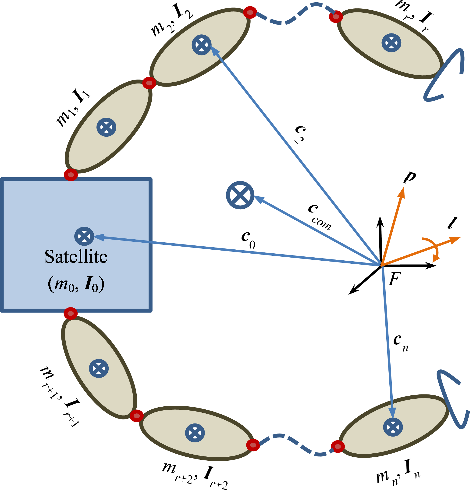

Reactionless Visual Servoing of Space Manipulator.

We targeted the problem of base attitude disturbance during manipulation of dual arm on a floating base.
we used Generalized Jacobian Matrix to control the end-effectors while accounting for the base disturbance.
A redundant system can perform the task in more than one way.
The choice of solution can be explored using the nullspace of the jacobian defining the primary task(visual servoing).
Task priority formulation was used to project a secondary task onto the nullspace of the primary task.
Secondary task was formulated as a minimization of cost function for attitude disturbance.
This way, we could reduce the base attitude disturbance to zero.